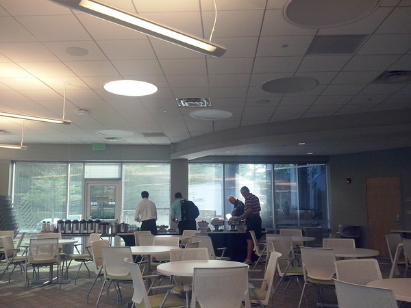
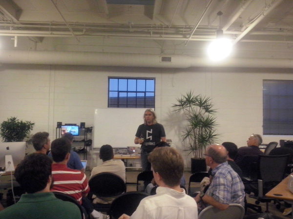
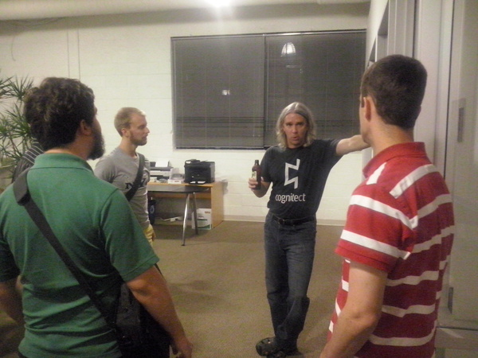
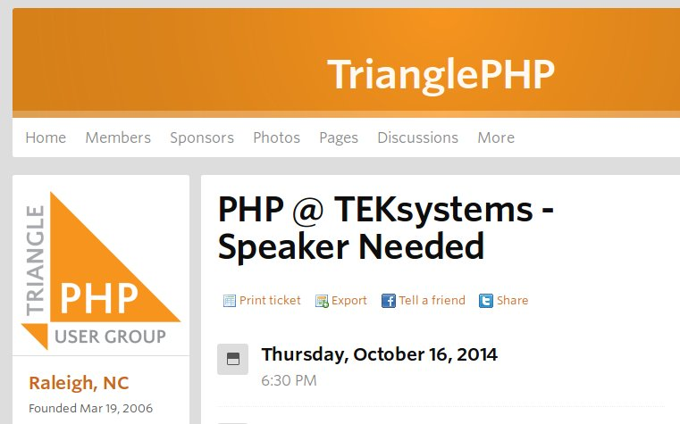

Meetups
Adolfo Neto
Visiting Professor at Realsearch - North Carolina State University
Assistant Professor at Federal University of Technology, Paraná
October 1st, 2014
First some pictures...
Before

Some meetups offer meals.
Most of the time it is pizza. Not in this case.
Before

There is some time for talking (networking?) before the start of the talk.
During

During the talk, everybody pays attention.
During

Some talks might include some activity.
After

After the talk, time for some mingling (networking).
There are Meetup groups for several different activities (running, cooking, playing the piano, learning natural languages, paleo lifestyle).
I will concentrate on Meetups related to software development.
Some of them are more related to programming. Others are related to software development process and management, DevOps, etc.
Not a new idea? Users' Group?
Examples of Meetup Groups related to Software Development
in the RTP Area*
- Agile Leadership Network - Raleigh/Durham Area Chapter
- Agile Lunches
- Agile RTP (ARTp)
- Triangle .NET User Group
- TriDroid - NC Triangle Android Meetup
- Triangle Python Users - triPython
* Raleigh, Durham, Cary, Chapel Hill, Morrisville.
Examples of Meetup Groups related to Software Development
in the RTP Area
Types of Meetups
The actual "offline" meetings:
- Talks
- Lightning Talks
- Hack Sessions
- "Meals" (breakfast, lunch)
I have only been to Talks and Lightning Talks.
Talks
Structure:
- [Optional] Food and Drinks (and Networking)
- Announcements (job offers, job requests, other events, ...) [1-10min]
- Talk [45-120min]
- Q&A after the talk [1-10min]
- [Optional] Giveaways [1-10min]
- [Optional] Additional announcements [1-5 min]
- Time for Networking
Lightning talks have the same structure, except that instead of one talk, it consists of several 5-10 minute talks.
Location:
Usually:
- Dining hall, conference room
- Usually in a company: Quintiles, WebAssign, Cognitec, MetLife, RedHat, Ipreo, ...
- Space for 30-100 participants
Date and Time
Usually:
- Monday to Thursday
- Start: 6 to 7PM
Meals
- Agile Coaches Breakfast http://www.meetup.com/RTP-ALN-Chapter/events/199420272/
Hack Sessions
Observations
- Software developers must "stay informed,maintain relationships, and keep their domain knowledge up to date"
- Professionals go to these Meetups after a day of work. They probably find some value in them.
- Which is the value?
- Mostly networking?
Hypotheses
- Meetups allow more flexibility regarding time than conference talks
- Meetups allow more Q&A during and after the talk than conference talks
- Meetups promote unexpected learning
- Meetups promote Reflective Practice (later)
Meetup Challenges
- Finding Speakers 
- Place
Meetup Challenges
- Place
- Parking (RedHat)
- Enough seats (some coworking spaces)
- Distance (NC State?, Durham?)
Variables
Groups:
- Name
- Members
- Creation date
- Upcoming meetups
- Past meetups
- Group reviews
Variables
Talks:
- Group
- Food?
- Giveaways?
- Type: Regular or Lightning
- RSVP Yes on site
- Actual Number of Participants
Variables
Talks:
- Start time
- End time
- Place
- Title
- Speaker(s)
- Day of week
Related work
The Reflective Software Engineer: Reflective Practive
- IEEE Software 2014 - Dybä, Maiden, Glass - Guest Editors' Introduction
- 26 submissions, 4 articles accepted
- "The capacity to reflect on past practice is important for continuous learning in software development."
Coderetreats: Reflective Practice and the Game of Life
- IEEE Software 2014
- The Three Questions
- What, if anything, did you learn today?
- What, if anything, surprised you today?
- What, if anything, will you do differently in the future?
Reflective Practice
Definition: the capacity to reflect on action so as to engage in a process of continuous learning (Schön, 1983)
"Individuals learning from their own professional experiences rather than from formal teaching"
- May be the most important source of professional development and improvement
practice-based professional learning
Schön 1983, Dewey 1933, ..., Marcus Aurelius
Software Engineers at the Speed of Light: How Developers Stay Current using Twitter
- ICSE 2014: Singer, Figueira Filho, Storey
- Qualitative study
- Surveyed 271, interviewed 27 developers active on Github
- Human Factors
Software Engineers at the Speed of Light: How Developers Stay Current using Twitter
- "Twitter (...) understanding its use could lead to improved support, and learning more about the reasons for non-adoption could inform the design of improved tools" (abstract)
- "Developers have to stay informed, maintain relationships, and keep their domain knowledge up to date" (introduction)
More Related Work
- Papers on Meetups
- Are there papers on User Groups?
- Coding Dojos
- PO Dojos
- Security Dojos